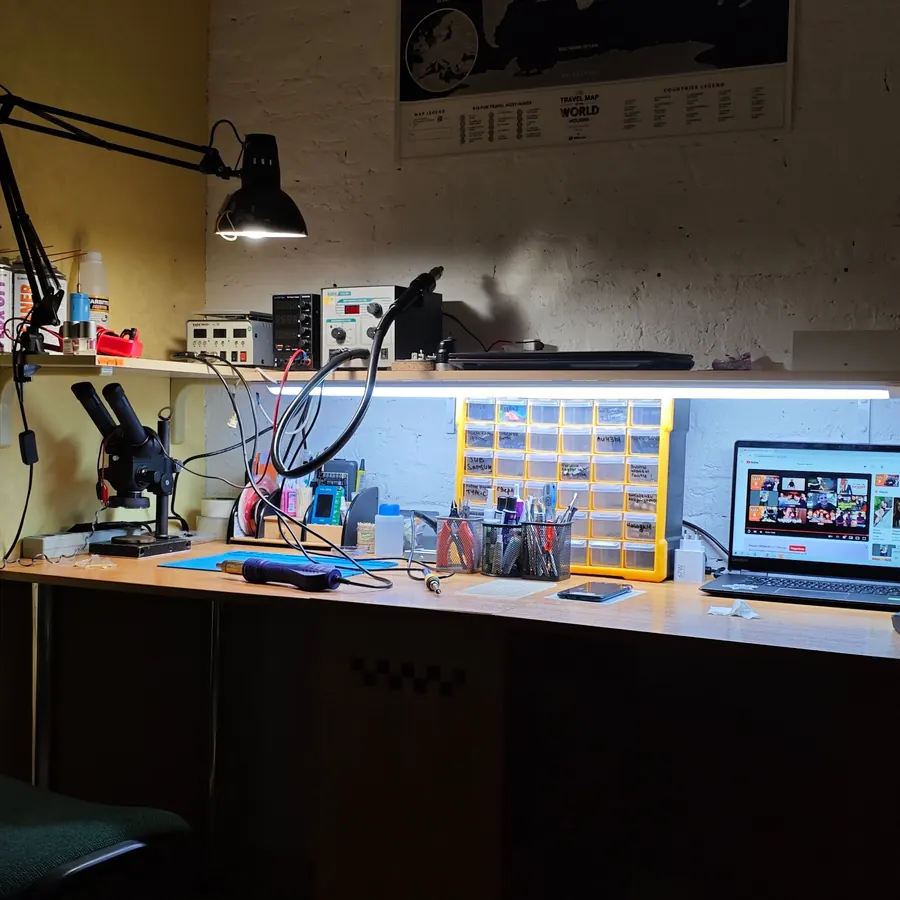

Ремонт ноутбуков в Мариуполе
Чистим ноутбуки от пыли, меняем матрицы, клавиатуры и батареи, ставим SSD, чиним петли и корпус, восстанавливаем систему. Диагностика бесплатная, чистка — 1–2 часа. Мастерская в ТЦ «Гудзон», ежедневно с 10:00 до 21:00.
Что делаем с ноутбуками
| Работа | Срок | Гарантия |
|---|---|---|
| Чистка от пыли и замена термопасты | 1–2 часа | — |
| Восстановление системы, установка программ и драйверов | по объёму | — |
| Замена матрицы | при наличии | — |
| Замена клавиатуры | при наличии | — |
| Замена батареи | при наличии | — |
| Ремонт корпуса и петель | после диагностики | — |
| Апгрейд: SSD вместо HDD, добавление памяти | в тот же день при наличии | — |
Цену называем после бесплатной диагностики, до начала работ. Пришлите модель ноутбука в Telegram — сориентируем сразу.
Греется, шумит, выключается
Чаще всего ноутбук перегревается из-за пыли в радиаторе и высохшей термопасты. Разбираем, чистим систему охлаждения и меняем термопасту — на это уходит 1–2 часа. После чистки ноутбук заметно тише и меньше тормозит под нагрузкой. Как понять, что пора, — в статье про чистку.
Медленно работает
Если ноутбук долго включается и подвисает, самый заметный эффект даёт замена жёсткого диска на SSD и добавление оперативной памяти. Файлы и программы переносим на новый диск. Если проблема в системе, переустанавливаем Windows и драйверы.

Экран, клавиатура, корпус
Разбитую матрицу, залитую или западающую клавиатуру и слабую батарею меняем на новые — подбираем по модели ноутбука. Сломанные петли и крепления восстанавливаем: стоимость и срок скажем после осмотра.
Как проходит ремонт
- Звоните или пишете в Telegram: модель и что случилось. Сразу говорим, сколько примерно займёт работа.
- Бесплатная диагностика — в мастерской или на месте при выезде. Если ремонт не нужен, ничего не платите.
- Называем точную цену до начала работ. Без доплат по ходу.
- Ремонтируем, проверяем вместе с вами и выдаём гарантию на работу.
Где нас найти
Мастерская: ТЦ «Гудзон», Ленинградский проспект (просп. Победы, 117), рядом с рынком «Солнечный». Ежедневно с 10:00 до 21:00. Можно вызвать мастера: по Левобережному району выезд бесплатный, в другие районы — стоимость по телефону.
Построить маршрут в Яндекс Картах →
Частые вопросы
Сколько стоит чистка ноутбука?
Зависит от модели: у одних ноутбуков система охлаждения доступна сразу, у других нужна полная разборка. Точную цену назовём по модели или после осмотра.
Можно подождать, пока чистите?
Да, чистка занимает 1–2 часа — можно подождать или забрать позже в тот же день.
Сохранятся ли файлы?
При чистке и замене деталей файлы не трогаем. При переустановке системы и замене диска заранее договариваемся, что перенести.
Приезжаете на дом?
Да, по всему Мариуполю. По Левобережному району выезд бесплатный. Сложный ремонт забираем в мастерскую и привозим обратно.
Ещё по теме: Чистка ноутбука от пыли